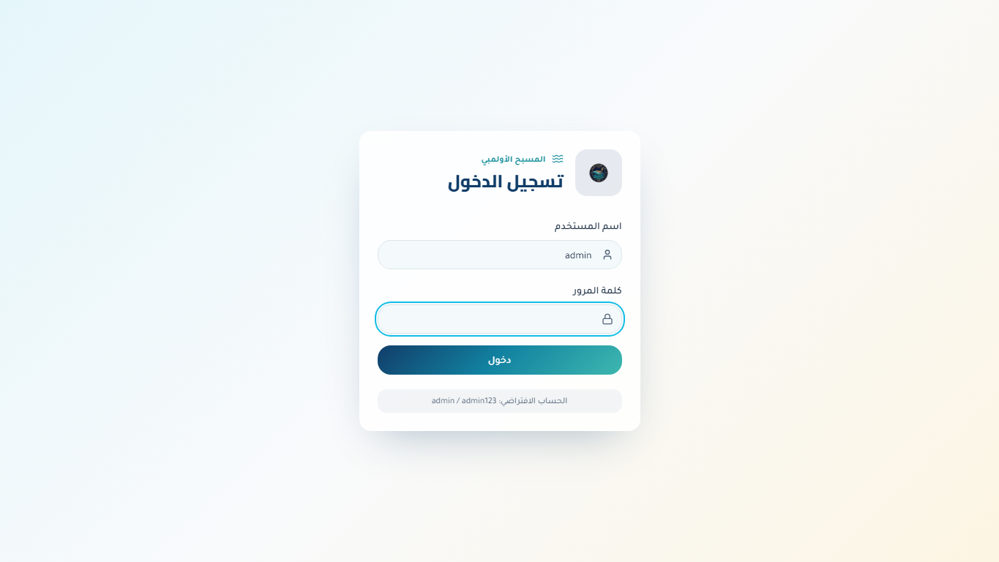

Maasba Project
Swimming pool web interface
A web interface for swimming pool operations with Arabic login and administration-oriented workflows.
1. Contexte du projet
This is the web-facing interface connected to swimming pool management work, with an Arabic-first login experience.
2. Objectifs
- Arabic login
- Admin access
- Pool management workflows
- Responsive web frontend
3. Acteurs
- Administrator
- Reception/operations staff
4. Interfaces et fonctions principales
| Login | Arabic login screen with default account hint for local/admin access. |
| Administrative dashboard | Post-login management area for the swimming pool workflow. |
| Subscriber operations | Membership and subscriber workflows connected to the broader project context. |
5. Technologies utilisees
TypeScriptReactViteOperations workflows
6. Travail en equipe / collaboration
Portfolio project connected to a broader operations system.
7. Captures d'ecran reelles

8. Liens
Repository: https://github.com/tayebzitouni/Piscine